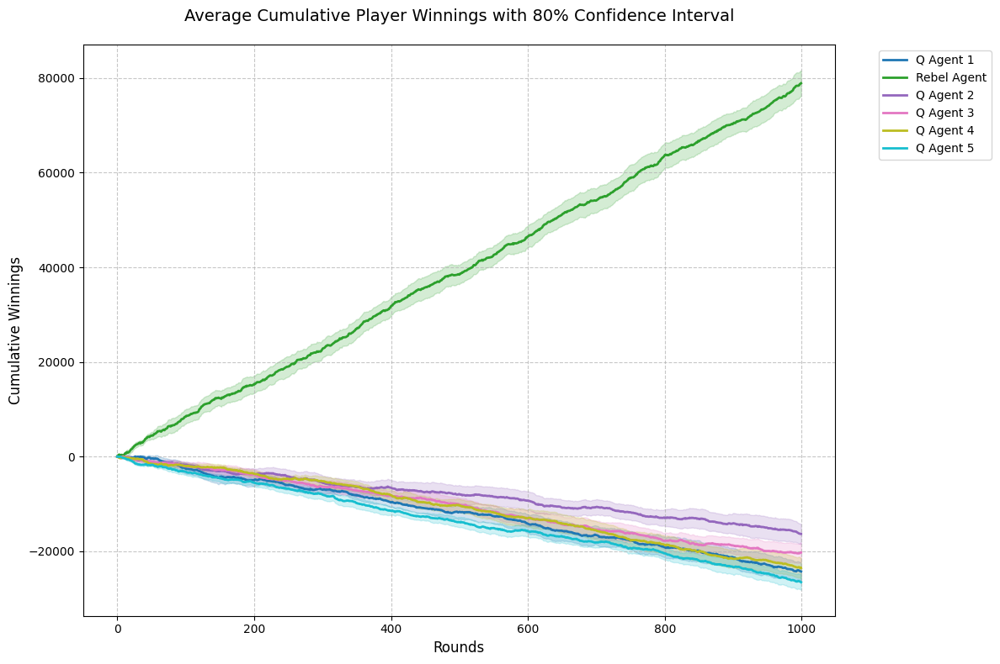
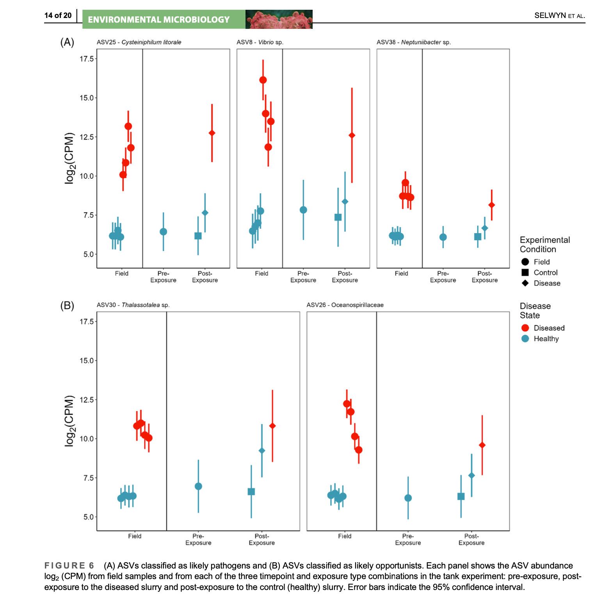
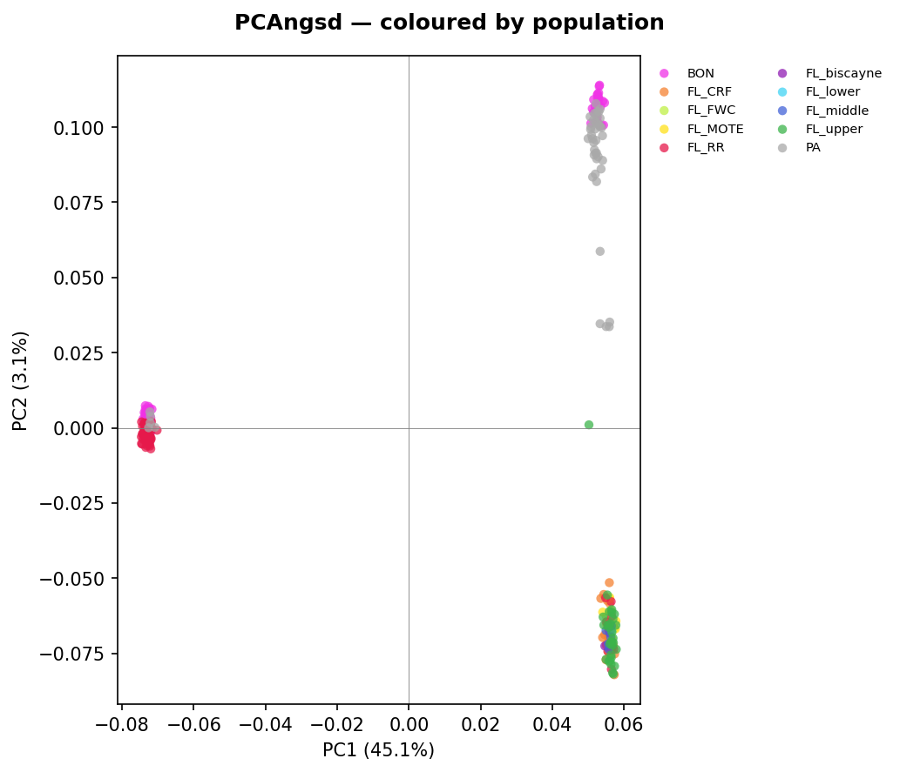

AI & Performance Engineer
I build, integrate, and optimize enterprise systems, with results on the record: $2M+ per month in infrastructure savings, an award-winning dashboard, and peer-reviewed machine learning research. I find and deliver improvements at every scale, from a single query to an enterprise platform.
Engineer, researcher, problem-finder
I'm a Performance Engineering Consultant at Moviri, serving global banking and telecommunications clients. My work spans cost optimization, full-stack development, platform migration, and AI-assisted automation, often within a single engagement.
I trained in Northeastern's Computer Science program with a concentration in AI, which taught me to work in any language or stack. Before Moviri I built ensemble machine learning and SHAP pipelines published in Environmental Microbiology, and genome-wide association pipelines at Mass General Hospital.
Full résuméLanguage-agnostic by training
Full-stack systems, front end to back end: an award-winning drill-down dashboard, internal web apps, ETL integrations, and multi-agent platforms, in whatever language the system requires.
I work inside existing enterprise environments: monitoring platforms, cloud APIs, data warehouses, ServiceNow, and NetSuite. When internals are undocumented, I reverse-engineer them into reusable tools.
I measure first, then cut waste: $2M+ per month saved by rightsizing ~10,000 servers, cost models for 100 TB data moves, and integrations that scale without per-host API calls.
Published ensemble ML research, reinforcement-learning agents, and a multi-agent framework in which agents build their own tools. AI-assisted engineering extends one engineer's output to enterprise scale.
3+ years of professional experience
$2M+ per month in infrastructure savings; built the Business Units dashboard that won the Innovation Award at the BMC Helix London Roadshow.
Sole engineer re-platforming 450 dashboards (7,000+ visualizations) into Databricks on a fixed timeline, using an AI-assisted toolchain I architected.
Machine learning and genomics pipelines, including a peer-reviewed publication.
Research, systems, and AI, with the figures to back them up

PaperReBeL-style self-play, CFR/MCCFR, and MCTS agents for 6-player poker; the ReBeL agent consistently beat Q-learning agents.
Read more →
PublishedEnsemble ML and SHAP pipelines identifying putative pathogens in endangered staghorn coral; 97%+ accuracy.
Read more →
In PrepA 290-genome pipeline on AWS spot instances: 2M+ SNPs, demographic history, and a candidate heat-tolerance locus.
Read more →Selwyn, JD, Despard, BA, Vollmer, MV, Trytten EC, Vollmer, SV (2024). Environmental Microbiology 26(9): e16700. Read the paper ↗
Vollmer, M., Senthil Kumar, D. (2024). Northeastern University, CS 4180 Reinforcement Learning. Read the paper ↗
I'm open to roles where I can build, integrate, optimize, and automate: AI engineering, data and platform engineering, performance engineering, and full-stack development.